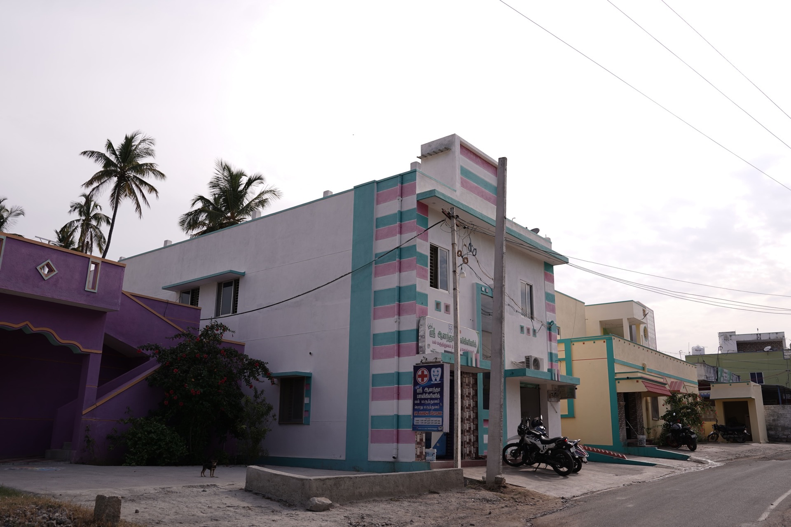
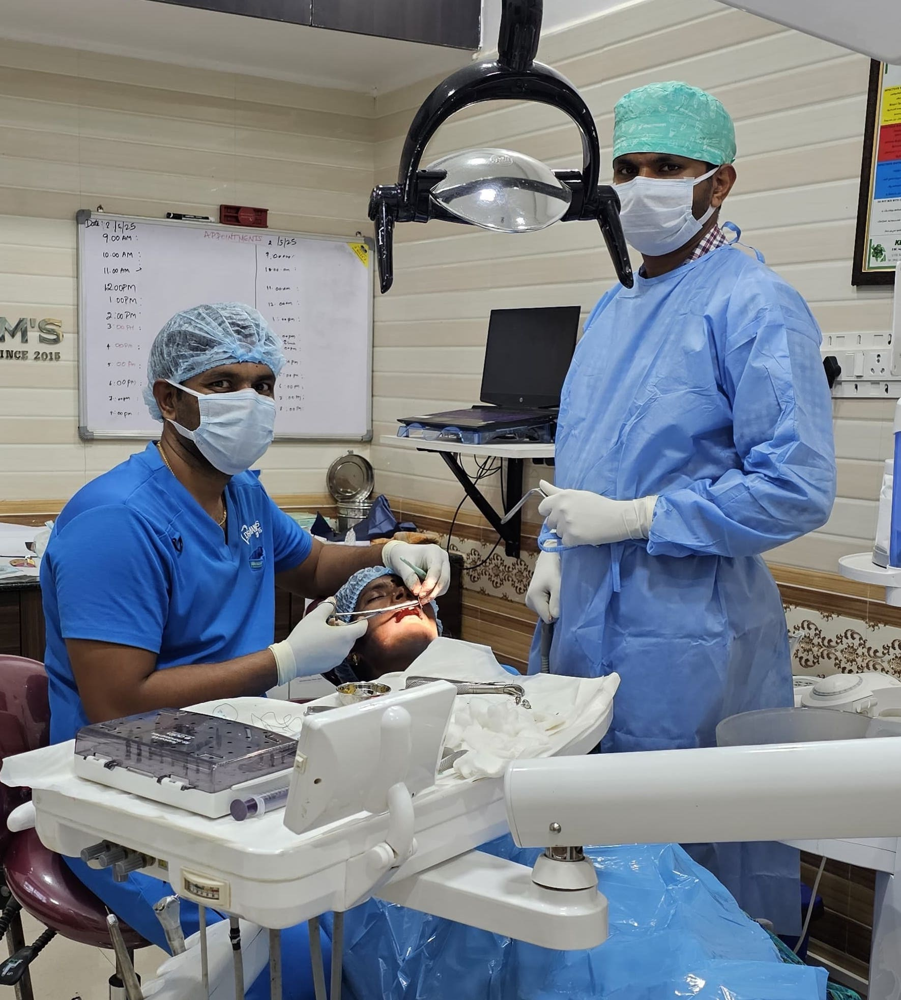

Discover the story, mission and values behind a multi-speciality clinic dedicated to dental and family healthcare.

Sri Anandha Poly Clinic was founded on a simple belief: every patient deserves the kind of careful, transparent care usually associated with premium private hospitals — delivered with the warmth of a community practice.
Over the years, we've grown into a multi-speciality healthcare destination, recognised for advanced dental implant care, attentive consultations and a calm, modern environment that puts patients at ease.
To deliver clinically excellent dental and family healthcare with honesty, compassion and accessibility.
To be the most trusted community healthcare destination — a place families return to across generations.
Integrity. Cleanliness. Patient education. Continuous learning. Care without compromise.
Started as a community dental practice focused on accessibility and quality.
Added family consultations, BP & diabetes monitoring and nursing support.
Dedicated implantology services with modern equipment and structured aftercare.
Renovated facility, expanded sterilisation unit, added TMJ specialist consultations.

We regularly support community health camps, oral hygiene awareness sessions in schools, and preventive screening programs for senior citizens — because healthier neighborhoods build healthier futures.
Book a consultation with our experienced clinical team. We're here to listen, examine, and guide you with care.